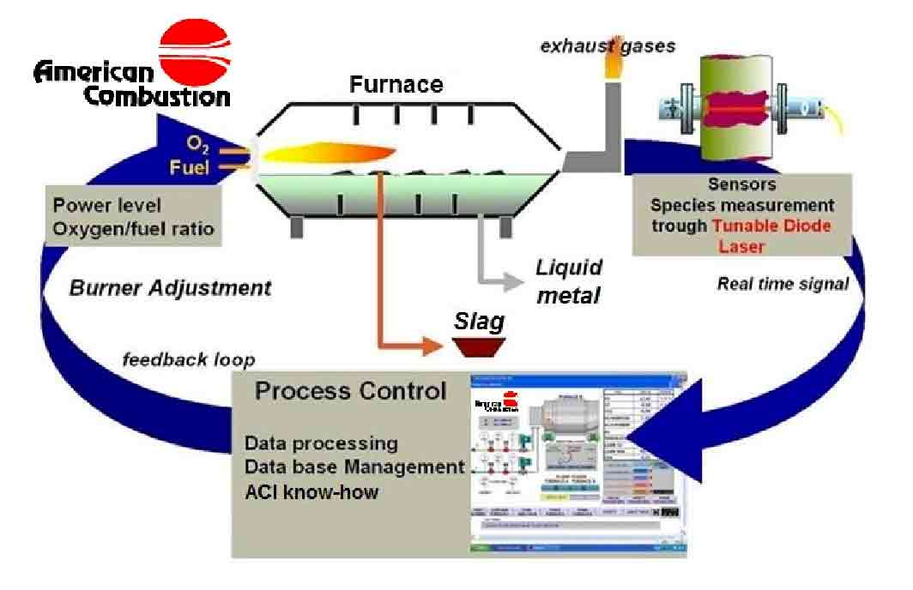

ACI's most used Lead furnace solution includes PyreTron™ air/oxy/fuel and PyrOx oxy/fuel burners, providing a higher flame temperature, an improved heat flux and a more efficient combustion, to significantly increase melting rates.
ACI systems offer the flexibility to vary the ratios of fuel and oxygen, in order to minimize fuel consumption and optimize thermal performance. This provides significant operating cost savings, compared to traditional burners. The fully automated PLC-based control system logic can be programmed to continuously optimize flame characteristics and to maximize system performance. The control system is equipped with self-diagnostic software for ease of maintenance. The operator interface provides for user-friendly operation.
Key characteristics of the ACI burner system for use in lead furnaces are:
- Increased Melt Rates of 50+ %
- Improved Metallic Yield
- Improved Control Over Smelting Chemistry
- Reduced CO and Other Combustibles in Exhaust
- Reduced Flue Gas Volumes for Reduced Air Pollution Requirements
ACI have developed reliable means to measure in real time using a Tunable Laser Diode device the CO content in the fumes and to accordingly regulate the air, oxygen and fuel flows, so as to optimize the furnace energy usage and increase metallic yield.
